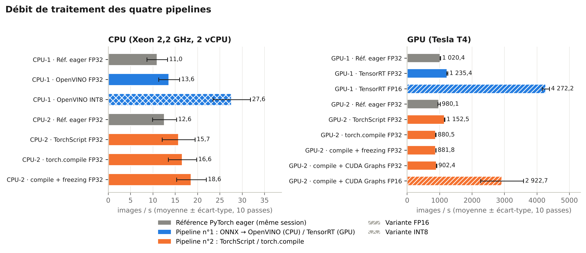
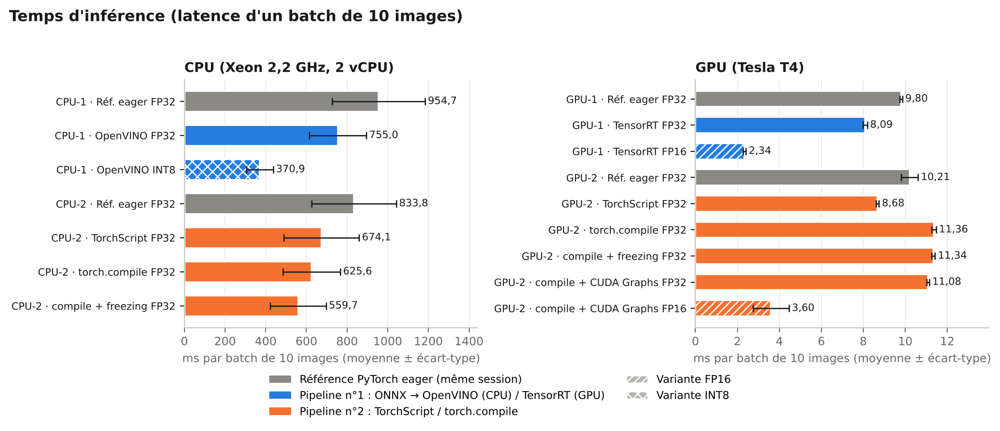
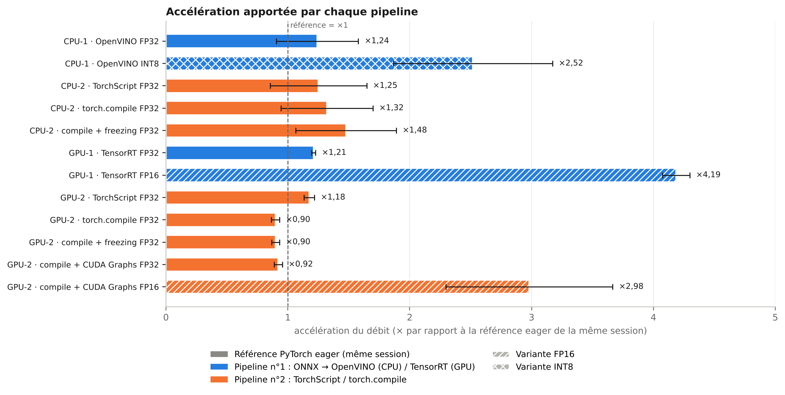
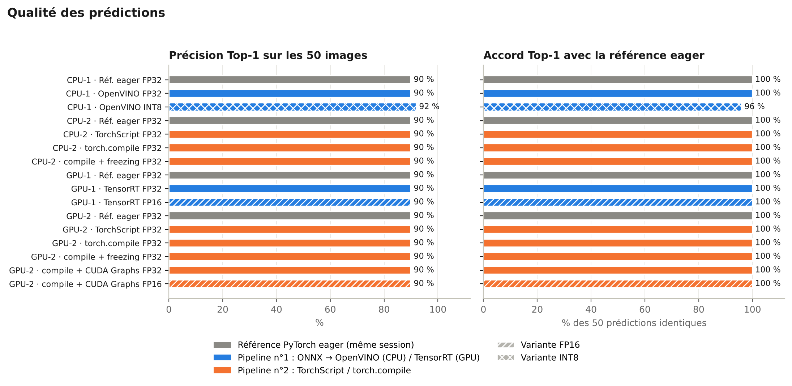
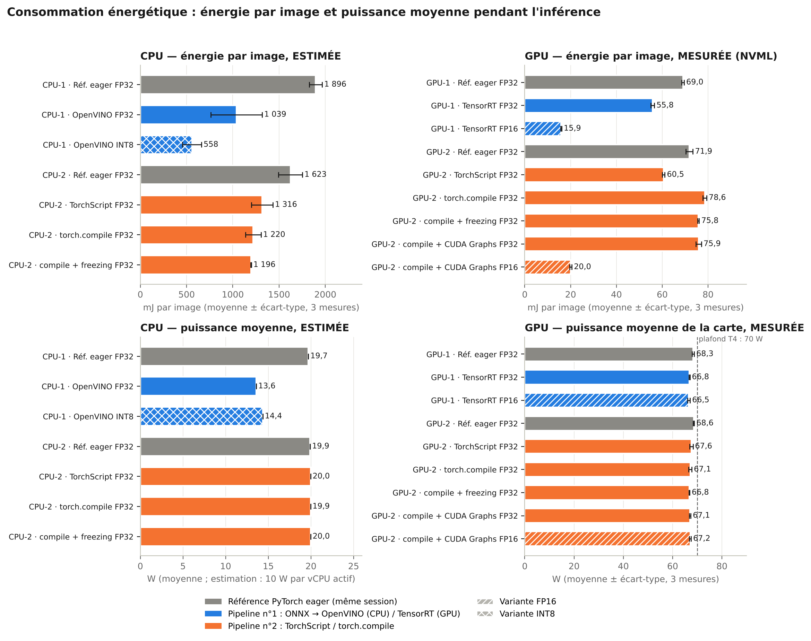
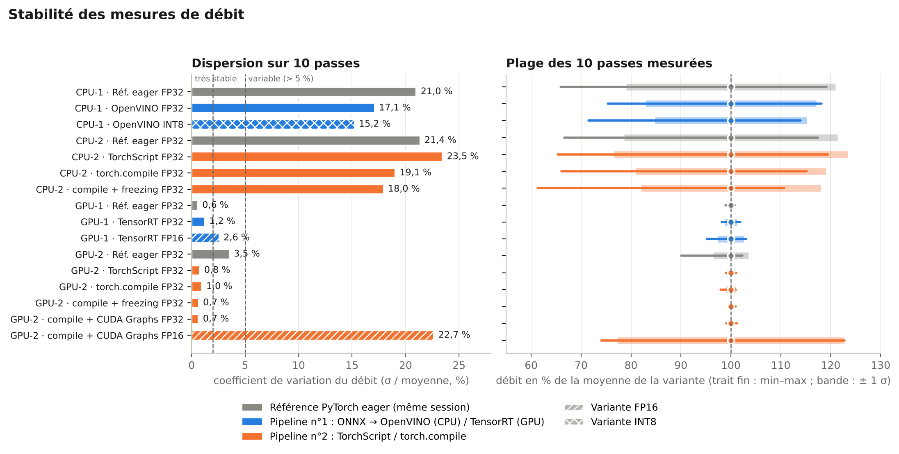
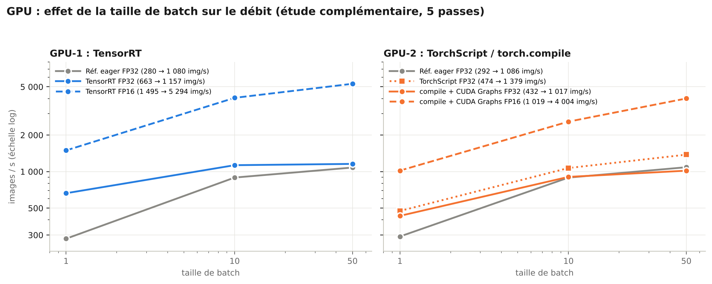

Nous avons déployé le même ResNet-18 (pré-entraîné ImageNet, tête 10 classes) à travers quatre chaînes logicielles, deux sur CPU et deux sur GPU, et mesuré sur les mêmes 50 images CIFAR-10 le débit, la latence, la précision Top-1, l'accord des prédictions et l'énergie par image, chaque indicateur étant répété (5 passes de chauffe, 10 passes mesurées, 3 mesures d'énergie). Sur GPU, TensorRT FP16 est le plus performant : 4 272 img/s, soit ×4,19 par rapport à PyTorch eager sur le même T4, et 77 % d'énergie en moins par image, sans aucune prédiction modifiée. Sur CPU, OpenVINO INT8 double le débit (×2,52) au prix de 2 prédictions sur 50 modifiées ; en FP32, OpenVINO, TorchScript et torch.compile apportent ×1,24 à ×1,48, mais ces écarts restent du même ordre que la forte variabilité des mesures CPU sur Colab (CV ≈ 20 %). Le GPU est 78 à 93 fois plus rapide que le CPU à implémentation égale. Toutes les variantes FP32 et FP16 donnent exactement les mêmes 50 prédictions que le modèle PyTorch d'origine.
L'objectif du TP est de comprendre, mettre en œuvre et comparer plusieurs chaînes de déploiement d'un même modèle d'IA, afin d'observer l'effet de chaque couche logicielle sur les performances d'inférence. Chaque chaîne suit l'enchaînement vu en cours : haut niveau → format du modèle → middle level → bas niveau → matériel.
Nous avons réalisé quatre notebooks Google Colab, un par pipeline. Pour que la comparaison soit équitable, les quatre notebooks partagent exactement le même code de préparation (sélection des images, prétraitement, construction du modèle 10 classes), les mêmes paramètres expérimentaux et les mêmes outils de mesure. Les fichiers communs (images prétraitées, poids, fichier ONNX) sont créés une seule fois et rechargés par les autres notebooks depuis un dossier Google Drive partagé ; une empreinte SHA-256 vérifie que tous les pipelines reçoivent les mêmes octets d'entrée.
Dans chaque notebook, le pipeline étudié est toujours comparé à une référence PyTorch eager FP32 mesurée dans la même session, sur la même machine. Comme les machines Colab changent d'une session à l'autre, les accélérations (rapport au débit de cette référence) sont plus fiables que les débits bruts pour comparer des pipelines mesurés à des moments différents.
| Couche | CPU n°1 | CPU n°2 | GPU n°1 | GPU n°2 |
|---|---|---|---|---|
| Haut niveau | PyTorch | PyTorch | PyTorch | PyTorch |
| Format du modèle | ONNX (opset 17) | TorchScript ; graphe FX (TorchDynamo) | ONNX (même fichier que CPU n°1) | TorchScript ; graphe FX (TorchDynamo) |
| Middle level | OpenVINO Runtime 2026.4 (fusion, choix des kernels) ; NNCF pour l'INT8 | freeze + optimize_for_inference ; torch.compile / Inductor (C++, OpenMP) | TensorRT 11.5 (fusion, chronométrage des tactics, FP16) | freeze + optimize_for_inference ; torch.compile / Inductor (Triton), CUDA Graphs |
| Bas niveau | oneDNN : brgconv_avx2_f32, jit_avx2 | oneDNN (mkldnn_convolution), code C++ généré | CUDA 13.0, cuDNN 9.28, kernels TensorRT | CUDA, cuDNN, kernels Triton générés |
| Matériel | Colab CPU : Intel Xeon 2,2 GHz, 2 vCPU (AVX2) | Colab GPU : NVIDIA Tesla T4 (Turing, sm 7.5, Tensor Cores, plafond 70 W) | ||
| Variantes mesurées | FP32 ; INT8 (quantification post-entraînement) | TorchScript FP32 ; torch.compile FP32 ; compile + freezing FP32 | FP32 ; FP16 | TorchScript FP32 ; torch.compile FP32 ; + freezing ; + CUDA Graphs FP32 et FP16 |
Les pipelines n°1 (bleu dans les graphiques) passent par un format d'échange (ONNX) et un moteur d'inférence spécialisé pour une famille de matériel (Intel pour OpenVINO, NVIDIA pour TensorRT). Les pipelines n°2 (orange) restent dans l'écosystème PyTorch : TorchScript fige le graphe par traçage, torch.compile le capture avec TorchDynamo puis le compile avec Inductor. La référence eager est en gris ; les variantes FP16 sont hachurées en biais et la variante INT8 en croisillons.
IMAGENET1K_V1). La couche finale (512 → 1000) est remplacée par une couche 512 → 10, apprise par linear probing (réseau pré-entraîné gelé) sur 3 000 images d'entraînement CIFAR-10 (300 par classe), avec la graine 42. Précision de validation de la tête : 80,8 % sur 500 images de test distinctes des 50 images évaluées.117a8d62…) sont vérifiés dans les quatre notebooks.time.perf_counter(). Sur GPU, une synchronisation CUDA attend la fin réelle du calcul avant d'arrêter le chronomètre.| Notebook | Session | Machine | Réf. eager (img/s) |
|---|---|---|---|
| CPU n°1 — OpenVINO | ov_20261116-085931 | Xeon 2,2 GHz, 2 vCPU | 10,97 |
| CPU n°2 — TorchScript / torch.compile | pt_20261116-104050 | Xeon 2,2 GHz, 2 vCPU | 12,59 |
| GPU n°1 — TensorRT | trt_20261125-163952 (+ une session antérieure le même jour) | Tesla T4, Xeon 2,0 GHz | 1 020,38 |
| GPU n°2 — TorchScript / torch.compile | ptgpu_20261125-172615 | Tesla T4, Xeon 2,0 GHz | 980,15 |
Les quatre notebooks utilisent les mêmes images, le même prétraitement, le même batch et les mêmes nombres de passes. Le notebook GPU n°1 a été exécuté dans deux sessions indépendantes, sur deux comptes Colab différents, ce qui permet d'évaluer la reproductibilité entre sessions (section 8).
Le tableau ci-dessous rassemble les moyennes, écarts-types et plages [min ; max] sur les 10 passes mesurées. L'accélération est calculée par rapport à la référence eager de la même session.
| Variante | Débit (img/s) moy ± σ | [min ; max] | CV | Latence / batch (ms) | Accél. | Top-1 | Énergie / image (mJ) | Prép. |
|---|---|---|---|---|---|---|---|---|
| CPU-1 · Réf. eager FP32 | 10,97 ± 2,30 | [7,2 ; 13,1] | 21,0 % | 954,7 ± 229,0 | ×1,00 | 90 % | 1 896 ± 70 * | — |
| CPU-1 · OpenVINO FP32 | 13,63 ± 2,33 | [10,3 ; 16,1] | 17,1 % | 755,0 ± 140,0 | ×1,24 | 90 % | 1 039 ± 277 * | 1,2 s |
| CPU-1 · OpenVINO INT8 | 27,63 ± 4,21 | [19,8 ; 31,5] | 15,2 % | 370,9 ± 65,8 | ×2,52 | 92 % | 558 ± 102 * | 28 s |
| CPU-2 · Réf. eager FP32 | 12,59 ± 2,69 | [8,4 ; 14,8] | 21,4 % | 833,8 ± 208,1 | ×1,00 | 90 % | 1 623 ± 129 * | — |
| CPU-2 · TorchScript FP32 | 15,74 ± 3,69 | [10,3 ; 18,8] | 23,5 % | 674,1 ± 185,3 | ×1,25 | 90 % | 1 316 ± 116 * | 7,2 s |
| CPU-2 · torch.compile FP32 | 16,62 ± 3,17 | [11,0 ; 19,2] | 19,1 % | 625,6 ± 140,6 | ×1,32 | 90 % | 1 220 ± 85 * | 34,9 s |
| CPU-2 · compile + freezing FP32 | 18,60 ± 3,34 | [11,4 ; 20,6] | 18,0 % | 559,7 ± 136,8 | ×1,48 | 90 % | 1 196 ± 4 * | 9,2 s |
| GPU-1 · Réf. eager FP32 | 1 020,4 ± 6,1 | [1 009 ; 1 029] | 0,6 % | 9,80 ± 0,06 | ×1,00 | 90 % | 69,0 ± 0,5 | — |
| GPU-1 · TensorRT FP32 | 1 235,4 ± 15,5 | [1 213 ; 1 259] | 1,3 % | 8,09 ± 0,10 | ×1,21 | 90 % | 55,8 ± 0,8 | 7,4 s |
| GPU-1 · TensorRT FP16 | 4 272,2 ± 111,2 | [4 070 ; 4 402] | 2,6 % | 2,34 ± 0,06 | ×4,19 | 90 % | 15,9 ± 0,2 | 11,3 s |
| GPU-2 · Réf. eager FP32 | 980,1 ± 34,8 | [882 ; 1 002] | 3,6 % | 10,21 ± 0,40 | ×1,00 | 90 % | 71,9 ± 1,5 | — |
| GPU-2 · TorchScript FP32 | 1 152,5 ± 9,1 | [1 141 ; 1 165] | 0,8 % | 8,68 ± 0,07 | ×1,18 | 90 % | 60,6 ± 0,6 | 1,2 s |
| GPU-2 · torch.compile FP32 | 880,5 ± 8,5 | [863 ; 889] | 1,0 % | 11,36 ± 0,11 | ×0,90 | 90 % | 78,6 ± 0,8 | 18,0 s |
| GPU-2 · compile + freezing FP32 | 881,8 ± 5,9 | [877 ; 891] | 0,7 % | 11,34 ± 0,08 | ×0,90 | 90 % | 75,8 ± 0,3 | 6,4 s |
| GPU-2 · compile + CUDA Graphs FP32 | 902,4 ± 6,0 | [894 ; 913] | 0,7 % | 11,08 ± 0,07 | ×0,92 | 90 % | 75,9 ± 1,2 | 4,9 s |
| GPU-2 · compile + CUDA Graphs FP16 | 2 922,7 ± 662,5 | [2 164 ; 3 587] | 22,7 % | 3,60 ± 0,86 | ×2,98 | 90 % | 20,0 ± 0,5 | 8,8 s |
* Énergie CPU estimée (10 W par vCPU actif × temps CPU), énergie GPU mesurée par NVML pour la carte seule : les deux ne sont pas directement comparables (section 7). « Prép. » : temps de préparation (compilation OpenVINO, quantification INT8, construction des moteurs TensorRT, traçage TorchScript, compilation torch.compile) ; pour torch.compile, la première compilation de la session est la plus longue, les suivantes profitent des caches.
Conformément aux consignes, chaque indicateur est résumé par sa moyenne, son écart-type (échantillon, ddof = 1), son minimum et son maximum. Les indicateurs de performance et de qualité portent sur les 10 passes mesurées de chaque variante ; l'énergie porte sur les 3 mesures d'au moins 10 s. Le coefficient de variation du débit figure dans le tableau de synthèse (section 4.1) et sur la figure 6.
| Variante | Débit (images/s) | Latence d'un batch de 10 images (ms) | ||||||
|---|---|---|---|---|---|---|---|---|
| moy. | σ | min | max | moy. | σ | min | max | |
| CPU-1 · Réf. eager FP32 | 10,97 | 2,30 | 7,23 | 13,07 | 954,7 | 229,0 | 765,1 | 1 383,3 |
| CPU-1 · OpenVINO FP32 | 13,63 | 2,33 | 10,27 | 16,11 | 755,0 | 140,0 | 620,8 | 973,5 |
| CPU-1 · OpenVINO INT8 | 27,63 | 4,21 | 19,76 | 31,49 | 370,9 | 65,8 | 317,5 | 506,1 |
| CPU-2 · Réf. eager FP32 | 12,59 | 2,69 | 8,39 | 14,78 | 833,8 | 208,1 | 676,6 | 1 192,2 |
| CPU-2 · TorchScript FP32 | 15,74 | 3,69 | 10,28 | 18,81 | 674,1 | 185,3 | 531,6 | 972,5 |
| CPU-2 · torch.compile FP32 | 16,62 | 3,17 | 10,98 | 19,15 | 625,6 | 140,6 | 522,3 | 910,8 |
| CPU-2 · compile + freezing FP32 | 18,60 | 3,34 | 11,40 | 20,58 | 559,7 | 136,8 | 485,9 | 876,9 |
| GPU-1 · Réf. eager FP32 | 1 020,4 | 6,1 | 1 009,1 | 1 029,0 | 9,799 | 0,059 | 9,717 | 9,908 |
| GPU-1 · TensorRT FP32 | 1 235,4 | 15,5 | 1 213,3 | 1 258,6 | 8,094 | 0,101 | 7,944 | 8,240 |
| GPU-1 · TensorRT FP16 | 4 272,2 | 111,2 | 4 069,5 | 4 402,5 | 2,341 | 0,062 | 2,270 | 2,456 |
| GPU-2 · Réf. eager FP32 | 980,1 | 34,8 | 882,4 | 1 002,4 | 10,21 | 0,40 | 9,97 | 11,33 |
| GPU-2 · TorchScript FP32 | 1 152,5 | 9,0 | 1 141,3 | 1 164,8 | 8,676 | 0,069 | 8,580 | 8,761 |
| GPU-2 · torch.compile FP32 | 880,5 | 8,5 | 862,6 | 889,4 | 11,36 | 0,11 | 11,24 | 11,59 |
| GPU-2 · compile + freezing FP32 | 881,8 | 5,9 | 876,9 | 890,7 | 11,34 | 0,08 | 11,23 | 11,40 |
| GPU-2 · compile + CUDA Graphs FP32 | 902,4 | 6,0 | 894,4 | 913,1 | 11,08 | 0,07 | 10,95 | 11,18 |
| GPU-2 · compile + CUDA Graphs FP16 | 2 922,6 | 662,5 | 2 164,0 | 3 587,1 | 3,595 | 0,863 | 2,787 | 4,620 |
Latence : moyenne, sur les 5 batches de chaque passe, du temps de traitement d'un batch ; les statistiques portent sur les 10 passes.
| Variante | Temps total pour 50 images (ms) | Précision Top-1 (%) | ||||||
|---|---|---|---|---|---|---|---|---|
| moy. | σ | min | max | moy. | σ | min | max | |
| CPU-1 · Réf. eager FP32 | 4 773,7 | 1 144,9 | 3 825,5 | 6 916,3 | 90 | 0 | 90 | 90 |
| CPU-1 · OpenVINO FP32 | 3 774,8 | 700,0 | 3 103,9 | 4 867,7 | 90 | 0 | 90 | 90 |
| CPU-1 · OpenVINO INT8 | 1 854,4 | 328,9 | 1 587,7 | 2 530,3 | 92 | 0 | 92 | 92 |
| CPU-2 · Réf. eager FP32 | 4 168,9 | 1 040,6 | 3 383,1 | 5 961,3 | 90 | 0 | 90 | 90 |
| CPU-2 · TorchScript FP32 | 3 370,5 | 926,4 | 2 657,9 | 4 862,3 | 90 | 0 | 90 | 90 |
| CPU-2 · torch.compile FP32 | 3 127,9 | 703,0 | 2 611,5 | 4 554,1 | 90 | 0 | 90 | 90 |
| CPU-2 · compile + freezing FP32 | 2 798,7 | 684,0 | 2 429,3 | 4 384,5 | 90 | 0 | 90 | 90 |
| GPU-1 · Réf. eager FP32 | 49,00 | 0,29 | 48,59 | 49,55 | 90 | 0 | 90 | 90 |
| GPU-1 · TensorRT FP32 | 40,48 | 0,51 | 39,73 | 41,21 | 90 | 0 | 90 | 90 |
| GPU-1 · TensorRT FP16 | 11,71 | 0,31 | 11,36 | 12,29 | 90 | 0 | 90 | 90 |
| GPU-2 · Réf. eager FP32 | 51,08 | 1,98 | 49,88 | 56,66 | 90 | 0 | 90 | 90 |
| GPU-2 · TorchScript FP32 | 43,39 | 0,34 | 42,92 | 43,81 | 90 | 0 | 90 | 90 |
| GPU-2 · torch.compile FP32 | 56,79 | 0,55 | 56,22 | 57,97 | 90 | 0 | 90 | 90 |
| GPU-2 · compile + freezing FP32 | 56,70 | 0,38 | 56,14 | 57,02 | 90 | 0 | 90 | 90 |
| GPU-2 · compile + CUDA Graphs FP32 | 55,41 | 0,37 | 54,76 | 55,90 | 90 | 0 | 90 | 90 |
| GPU-2 · compile + CUDA Graphs FP16 | 17,98 | 4,31 | 13,94 | 23,11 | 90 | 0 | 90 | 90 |
Le Top-1 est identique sur les 10 passes de chaque variante (écart-type nul, minimum = maximum) : l'inférence est déterministe, seule la durée varie.
| Variante | Énergie par image (mJ) | Puissance moyenne (W) | ||||||
|---|---|---|---|---|---|---|---|---|
| moy. | σ | min | max | moy. | σ | min | max | |
| CPU-1 · Réf. eager FP32 | 1 896 | 70 | n.d. | n.d. | 19,70 | n.d. | n.d. | n.d. |
| CPU-1 · OpenVINO FP32 | 1 039 | 277 | n.d. | n.d. | 13,59 | n.d. | n.d. | n.d. |
| CPU-1 · OpenVINO INT8 | 558 | 102 | n.d. | n.d. | 14,36 | n.d. | n.d. | n.d. |
| CPU-2 · Réf. eager FP32 | 1 623 | 129 | n.d. | n.d. | 19,90 | n.d. | n.d. | n.d. |
| CPU-2 · TorchScript FP32 | 1 316 | 116 | n.d. | n.d. | 19,96 | n.d. | n.d. | n.d. |
| CPU-2 · torch.compile FP32 | 1 220 | 85 | n.d. | n.d. | 19,95 | n.d. | n.d. | n.d. |
| CPU-2 · compile + freezing FP32 | 1 196 | 4 | n.d. | n.d. | 19,96 | n.d. | n.d. | n.d. |
| GPU-1 · Réf. eager FP32 | 69,02 | 0,49 | 68,59 | 69,55 | 68,31 | 0,46 | 67,82 | 68,74 |
| GPU-1 · TensorRT FP32 | 55,80 | 0,75 | 55,12 | 56,61 | 66,83 | 0,17 | 66,70 | 67,02 |
| GPU-1 · TensorRT FP16 | 15,88 | 0,21 | 15,70 | 16,11 | 66,55 | 0,54 | 65,97 | 67,05 |
| GPU-2 · Réf. eager FP32 | 71,86 | 1,52 | 70,71 | 73,59 | 68,58 | 0,23 | 68,32 | 68,74 |
| GPU-2 · TorchScript FP32 | 60,55 | 0,55 | 60,12 | 61,17 | 67,60 | 0,65 | 67,14 | 68,35 |
| GPU-2 · torch.compile FP32 | 78,57 | 0,77 | 77,90 | 79,42 | 67,14 | 0,65 | 66,62 | 67,87 |
| GPU-2 · compile + freezing FP32 | 75,79 | 0,33 | 75,42 | 75,99 | 66,78 | 0,15 | 66,65 | 66,95 |
| GPU-2 · compile + CUDA Graphs FP32 | 75,92 | 1,17 | 75,12 | 77,25 | 67,06 | 0,31 | 66,84 | 67,42 |
| GPU-2 · compile + CUDA Graphs FP16 | 20,04 | 0,46 | 19,65 | 20,55 | 67,16 | 0,34 | 66,86 | 67,53 |
GPU : mesure NVML de la carte, 3 mesures. CPU : estimation (10 W × temps CPU actif) ; les notebooks CPU n'affichent que la moyenne et l'écart-type de l'énergie (et la moyenne de la puissance) : le minimum et le maximum (n.d.) sont enregistrés dans les fichiers results/*.json du Drive de l'exécution CPU et peuvent être ajoutés à partir de ces fichiers.

Sur CPU, toutes les variantes restent entre 11 et 28 img/s. En FP32, les gains sont modestes : OpenVINO ×1,24, TorchScript ×1,25, torch.compile ×1,32 et torch.compile avec freezing ×1,48. Ces écarts sont du même ordre que les barres d'erreur, qui sont très larges (σ ≈ 2 à 4 img/s) : les plages [min ; max] de toutes les variantes FP32 se chevauchent, ce qui empêche de les départager de manière robuste (section 8). La seule différence nette est la quantification INT8 d'OpenVINO, qui double le débit (27,6 img/s ; son minimum, 19,8 img/s, dépasse le maximum de toutes les variantes FP32).
Sur GPU, les débits sont de l'ordre du millier d'images par seconde. En FP32, seuls TensorRT (×1,21) et TorchScript (×1,18) accélèrent l'inférence ; les trois variantes torch.compile sont environ 10 % plus lentes que la référence eager. Le passage en FP16 change d'échelle : 4 272 img/s avec TensorRT et 2 923 img/s avec torch.compile + CUDA Graphs, grâce aux Tensor Cores du T4.

La latence d'un batch suit l'inverse du débit, puisque les batches sont traités l'un après l'autre. Sur CPU, un batch de 10 images prend entre 371 ms (OpenVINO INT8) et 955 ms (eager), avec des écarts-types de 66 à 229 ms. Sur GPU, il prend entre 2,34 ms (TensorRT FP16) et 11,4 ms (torch.compile FP32), avec des écarts-types de l'ordre de 0,1 ms. À la référence eager, le GPU traite un batch environ 97 fois plus vite que le CPU (9,80 ms contre 954,7 ms). La variante FP16 + CUDA Graphs se distingue par une latence instable (3,60 ± 0,86 ms).

Exprimées en accélération, les variantes des deux plateformes deviennent comparables sur un même axe. Trois enseignements ressortent :

| Variante | max |Δlogit| vs eager | Accord Top-1 | Top-1 | Interprétation |
|---|---|---|---|---|
| Toutes les variantes FP32 (OpenVINO, TorchScript, torch.compile, TensorRT) | 2,9·10⁻⁵ à 7,3·10⁻⁵ | 100 % | 90 % | Écarts d'arrondi flottant : ordre des opérations et algorithmes de convolution différents |
| GPU-2 · torch.compile + CUDA Graphs FP16 | 4,6·10⁻² | 100 % | 90 % | Demi-précision (10 bits de mantisse), accumulation en FP32 |
| GPU-1 · TensorRT FP16 | 1,0·10⁻¹ | 100 % | 90 % | Demi-précision, accumulation en FP16 : écart deux fois plus grand |
| CPU-1 · OpenVINO INT8 | 1,74 | 96 % | 92 % | Quantification 8 bits : 2 prédictions sur 50 changent |
Les optimisations ne dégradent pas les prédictions en FP32 : les logits diffèrent de moins de 10⁻⁴ de ceux de la référence, l'accord Top-1 est de 100 % dans les quatre pipelines et le Top-1 vaut 90 % (45 images sur 50) partout. Sur GPU, où nous avons comparé les prédictions image par image, les 5 erreurs sont les mêmes pour toutes les variantes : une grenouille et deux cerfs pris pour des oiseaux, un oiseau pris pour un cerf, une automobile prise pour un navire. En FP16, les écarts de logits sont environ 1 000 fois plus grands, mais aucune prédiction ne change. Les kernels utilisés par torch.compile accumulent les produits en FP32 (f16f16_f16f32) alors que le réseau TensorRT les accumule en FP16 (f16f16_f16f16), ce qui explique l'écart deux fois plus grand de TensorRT.
L'INT8 est la seule variante qui modifie des prédictions : 2 images sur 50 changent de classe (accord 96 %), avec un écart de logits de 1,74. Le Top-1 passe de 90 à 92 %, mais ce n'est pas une amélioration du modèle : sur 50 images, une image vaut 2 points et un changement de ± 1 image est dans le bruit d'un échantillon aussi petit. Nous avons d'ailleurs observé le même phénomène dans une première session TensorRT FP16, où une image limite (une grenouille) avait été corrigée (92 %) avant de redevenir fausse dans la session suivante (90 %). Il faudrait évaluer l'INT8 sur un plus grand jeu de test pour mesurer sa perte de précision réelle.

Sur GPU, la puissance moyenne en charge (figure 5, en bas à droite) est presque identique pour toutes les variantes (66,5 à 68,6 W, près du plafond de 70 W du T4, contre 26 à 28 W au repos). L'énergie par image suit donc directement le temps par image (E ≈ P × t) : par exemple 68,3 W × 0,98 ms ≈ 67 mJ pour eager (69,0 mJ mesurés). La variante la plus rapide est aussi la plus sobre : TensorRT FP16 consomme 15,9 mJ par image, soit 77 % de moins qu'eager ; torch.compile FP16, 20,0 mJ (−72 %) ; TensorRT FP32 et TorchScript, −19 % et −16 %. À l'inverse, les variantes torch.compile FP32, plus lentes, consomment 5 à 9 % de plus qu'eager.
Sur CPU (figure 5, à gauche), l'estimation est proportionnelle au temps CPU consommé. Les variantes PyTorch occupent les deux vCPU (≈ 20 W estimés), si bien que leur gain d'énergie suit leur gain de temps (−19 à −26 %). OpenVINO occupe moins de temps CPU pour le même travail (≈ 14 W estimés) : son gain d'énergie (−45 % en FP32, −71 % en INT8) dépasse son gain de débit. Cette lecture dépend toutefois entièrement de l'hypothèse de 10 W par vCPU actif.
Comparaison CPU / GPU à interpréter avec prudence. À la référence eager, l'énergie par image est de 1 623 à 1 896 mJ sur CPU (estimée) contre 69 à 72 mJ sur GPU (mesurée), soit un rapport de 23 à 27. Mais la valeur GPU ne compte que la carte (ni le CPU hôte qui pilote le GPU, ni la mémoire), et la valeur CPU repose sur une hypothèse de puissance. Le sens de l'écart est robuste (le GPU traite chaque image ~90 fois plus vite pour une puissance seulement ~3,5 fois plus élevée), sa valeur exacte ne l'est pas.

Le pipeline GPU n°1 a été exécuté dans deux sessions indépendantes (deux comptes Colab, deux machines T4). Les résultats sont reproductibles à moins de 2 % près : eager 1 019 → 1 020 img/s, TensorRT FP32 1 254 → 1 235 img/s (−1,5 %), TensorRT FP16 4 284 → 4 272 img/s (−0,3 %) ; énergie par image 69,0 → 69,0, 56,1 → 55,8 et 16,0 → 15,9 mJ. En revanche, la référence eager varie davantage entre notebooks différents : de 4 % entre les deux sessions GPU (1 020 et 980 img/s) et de 15 % entre les deux sessions CPU (11,0 et 12,6 img/s). C'est pourquoi nous comparons les pipelines par leur accélération par rapport à la référence de leur propre session.

Au batch 1, le GPU est sous-utilisé et le temps est dominé par les coûts fixes (lancement d'une centaine de kernels, appels Python) : c'est là que les optimisations de graphe rapportent le plus (TensorRT FP32 ×2,4, TorchScript ×1,6, CUDA Graphs ×1,5 par rapport à eager). Au batch 50, le calcul domine et l'avantage FP32 se réduit (TensorRT ×1,07, CUDA Graphs ×0,94), tandis que le FP16 continue de progresser (5 294 img/s pour TensorRT) car les Tensor Cores ont besoin de beaucoup de travail en parallèle. Augmenter le batch améliore le débit mais allonge la latence de chaque batch (TensorRT FP16 : 0,67 ms au batch 1, 9,4 ms au batch 50) : c'est le compromis latence / débit. Pour la plupart des variantes, ces mesures au batch 10 refaites en fin de notebook sont 5 à 13 % plus basses que les mesures principales, ce qui illustre aussi l'effet de l'état thermique du GPU.
read_model 0,36 s, compile_model 0,83 s. Le graphe compilé ne contient plus que 20 couches Convolution, 1 Pooling, 1 Reduce (moyenne globale), 1 FullyConnected et 2 Reorder (changements de disposition mémoire), plus des constantes : les 17 ReLU et les 8 additions résiduelles ont été fusionnées dans les convolutions.brgconv_avx2_f32 (17 appels) et brgconv_avx2_1x1_f32 (3 appels), choisies pour le jeu d'instructions AVX2 du Xeon Colab. Le reste (MaxPool, Reorder, moyenne, couche dense) représente moins de 3 %. C'est ce qui limite le gain FP32 à ×1,24 : OpenVINO supprime les opérations élémentaires, mais les convolutions sont de toute façon déjà exécutées par oneDNN dans PyTorch.torch.jit.freeze puis optimize_for_inference, 7,2 s) : les 20 convolutions deviennent des prim::mkldnn_convolution avec la BatchNorm repliée et des poids pré-convertis au format oneDNN (40 constantes MKLDNN). Les 17 ReLU et 8 additions restent des opérations séparées. Le nombre d'appels natifs par batch passe de 427 (eager) à 66 et le temps profilé de 645 à 540 ms : ×1,25.sm75_xmma…f16 et h1688cudnn), le temps GPU tombe à 1,9 ms par batch et le moteur pèse 22,6 Mo contre 52,2 Mo : ×4,19 et −77 % d'énergie par image. Le moteur est lié au GPU, à la version de TensorRT et à la taille de batch : il faut le reconstruire si l'un d'eux change. La construction est amortie après environ 43 000 images en FP32 et 15 000 en FP16.reduce-overhead) : le même nombre de kernels est exécuté (86 par batch), mais ils sont rejoués en un seul appel CPU. Le gain est faible au batch 10 (×0,92) mais net au batch 1 (×1,5), où le coût de lancement domine.| Critère | CPU : OpenVINO vs PyTorch | GPU : TensorRT vs PyTorch |
|---|---|---|
| Meilleur FP32 | compile + freezing ×1,48 ≥ OpenVINO ×1,24 (écart non significatif : CV ≈ 20 %) | TensorRT ×1,21 ≈ TorchScript ×1,18 (écart significatif mais faible : 1 235 contre 1 152 img/s) |
| Précision réduite | OpenVINO INT8 ×2,52 (2 prédictions sur 50 modifiées) ; pas d'équivalent mesuré côté PyTorch | TensorRT FP16 ×4,19 contre torch.compile FP16 ×2,98 : TensorRT 1,46 fois plus rapide et 21 % plus sobre |
| Stabilité | Équivalente (CV 15–23 % partout) | TensorRT FP16 bien plus stable (CV 2,6 % contre 22,7 %) |
| Préparation | OpenVINO 1,2 s (+ 28 s pour l'INT8) ; TorchScript 7,2 s ; torch.compile 9 à 35 s | TensorRT 7 à 11 s ; TorchScript 1,2 s ; torch.compile 5 à 18 s |
| Déploiement | Format ONNX portable, runtime indépendant de PyTorch, spécialisé Intel | Moteur figé, lié au GPU, à TensorRT et au batch ; hors de Python |
Les moteurs spécialisés (OpenVINO, TensorRT) l'emportent surtout grâce aux précisions réduites qu'ils rendent faciles à exploiter (INT8, FP16 « strongly typed » avec choix des kernels par chronométrage). En FP32, l'approche intégrée à PyTorch fait presque jeu égal : TorchScript avec freezing obtient sur GPU un gain presque identique à celui de TensorRT pour une préparation de 1,2 s, et torch.compile avec freezing est la meilleure variante FP32 sur CPU. torch.compile n'est en revanche pas adapté à ce modèle sur ce GPU en FP32 : il est plus lent qu'eager au batch 10.
Les quatre chaînes de déploiement produisent les mêmes prédictions que le modèle PyTorch d'origine en FP32 et en FP16, ce qui confirme que les couches intermédiaires (format ONNX ou TorchScript, compilateurs et runtimes) peuvent être optimisées sans dégrader les résultats. Leur effet sur les performances dépend fortement de la couche concernée :
Pour servir ce ResNet-18, nous recommandons TensorRT FP16 sur GPU (4 272 img/s, 2,3 ms par batch, 15,9 mJ par image, résultats stables et reproductibles). Sur CPU, OpenVINO INT8 est le choix le plus rapide si une légère variation des prédictions est acceptable ; sinon, torch.compile avec freezing ou OpenVINO FP32 apportent un gain plus modeste. Enfin, les mesures CPU sur Colab sont trop variables pour conclure sur des écarts de quelques dizaines de pourcents : la reproductibilité des résultats doit être vérifiée par des exécutions répétées, comme nous l'avons fait pour le pipeline TensorRT.
| Élément | CPU (notebooks CPU n°1 et n°2) | GPU (notebooks GPU n°1 et n°2) |
|---|---|---|
| Processeur | Intel Xeon @ 2,20 GHz, 2 vCPU | Intel Xeon @ 2,00 GHz, 2 vCPU (hôte) |
| Accélérateur | — | NVIDIA Tesla T4, 15 Go, sm 7.5, 70 W, pilote 580.82 |
| Python / PyTorch | Python 3.13, PyTorch 2.14.1+cpu, torchvision 0.29.1 | PyTorch 2.14.1+cu130, CUDA 13.0, cuDNN 9.28, Triton 3.8.0 |
| Runtimes | OpenVINO 2026.4.1 ; ONNX (opset 17) | TensorRT 11.5.0.63 ; ONNX 1.23.2 |
| Énergie | Estimation psutil (RAPL indisponible) | NVML (nvidia-ml-py) |
| Chemin | Contenu |
|---|---|
notebooks/ | Les quatre notebooks Colab exécutés (un par pipeline), avec leurs sorties, profils et graphiques |
rapport/ | Ce rapport (PDF) et sa source HTML |
figures/ | Les sept graphiques de comparaison de ce rapport |
resultats/resultats.json | Les mesures utilisées dans ce rapport (moyennes, écarts-types, min, max, CV, énergie) |
scripts/figures.py | Le script qui régénère les figures à partir de resultats.json |
Ouvrir chaque notebook dans Google Colab, choisir le type d'exécution (CPU pour les notebooks CPU, GPU T4 pour les notebooks GPU), puis Exécution → Tout exécuter en autorisant l'accès à Google Drive. Le premier notebook exécuté crée les fichiers communs (images, poids, ONNX) dans MyDrive/TP_Deploiement_IA/shared ; les suivants les rechargent. La section de comparaison de chaque notebook rassemble les résultats déjà présents dans MyDrive/TP_Deploiement_IA/results.